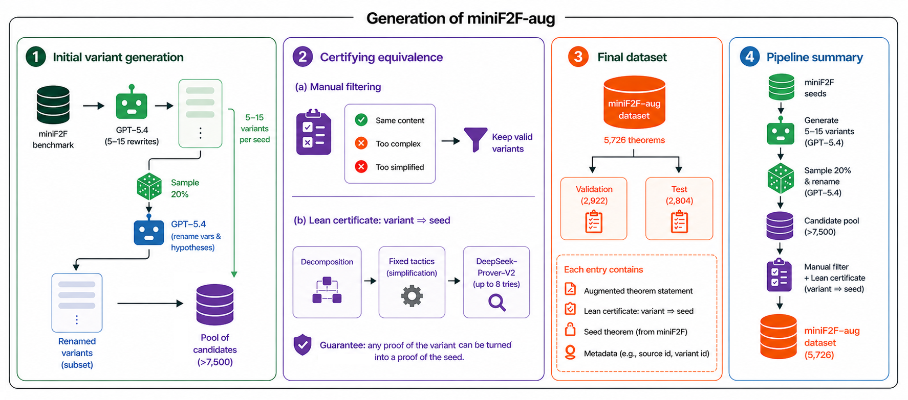
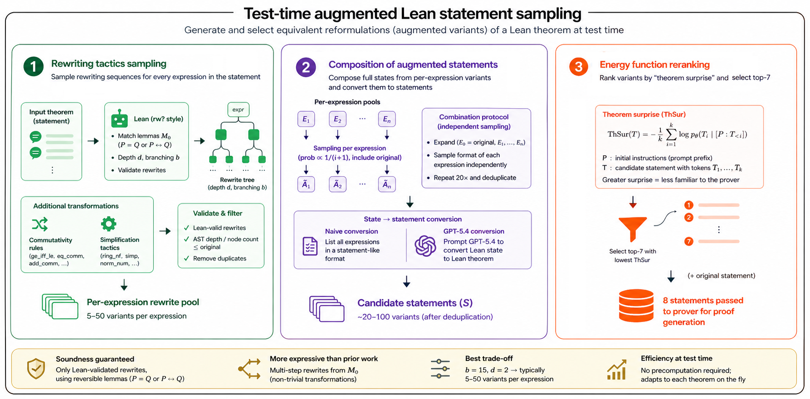
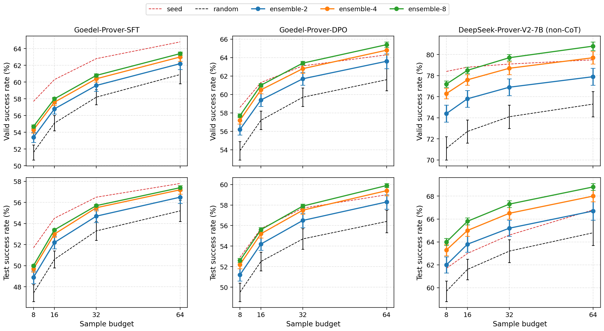

Models Lean tactic-induced statement rewrites categorically, builds miniF2F-rw with Lean-certified equivalent variants, and ensembles LLM Lean provers over Mathlib-based rewrites.
Abstract
Formal theorem provers based on large language models (LLMs) are highly sensitive to superficial variations in problem representation: semantically equivalent statements can exhibit drastically different proof success rates, revealing a failure to respect structural symmetries inherent in formal mathematics. This raises a central question: what are the right symmetries for formal theorem proving? We introduce rewriting categories, a category-theoretic framework capturing the compositional, generally non-invertible transformations induced by proof tactics, and use it to formalize two symmetry notions: proof equivariance, governing how proof distributions transform under rewrites, and success invariance (i.e., invariance of success probability), requiring equivalent statements to be solved with the same probability. We observe that state-based next-tactic provers naturally satisfy proof equivariance by operating on proof states. In contrast, state-of-the-art LLM-based provers satisfy neither property, exhibiting large performance variation across equivalent formulations. To mitigate this, we propose test-time methods that aggregate over equivalent rewritings of the input, showing theoretically that they recover success invariance in the sampling limit, and empirically, that they improve robustness and performance under fixed inference budgets. Our results highlight symmetry as a key missing inductive bias in LLM-based theorem proving and suggest test-time computation as a practical route to approximate it.
Problem
LLM-based Lean provers are highly sensitive to semantically equivalent reformulations of theorem statements, so their success rates vary sharply across equivalent inputs. Group-based symmetry models do not capture the compositional, non-invertible transformations that Lean tactics induce.
Approach
Rewriting categories are introduced, with Lean statements as objects and tactic sequences as arrows. They are used to define two properties, proof equivariance and success invariance. A test-time rewriting ensemble samples equivalent variants using non-conditional Mathlib lemmas and simplification tactics, scores them with a model-based energy function, splits the proving budget across variants, and lifts any Lean-verified proof back to the original statement. The miniF2F-rw benchmark pairs each of miniF2F's 488 problems with 5-15 rewrites, each carrying a Lean equivalence certificate.

Figure 8: Process of generation of the miniF2F-rw dataset.

Figure 10: Sampling process for the test-time ensemble mechanism.
Results
DeepSeek-Prover-V2 and Goedel-Prover drop in pass@k on random equivalent variants compared with the seed statements. Rewriting ensembles recover robustness and often improve performance under fixed budgets; for example, DeepSeek-Prover-V2-7B on the Ineq-Comp-trans split rises from 34.8 to 40.8 at budget 32. The ensembles also provably recover success invariance in the sampling limit.

Figure 11: PASS@ k success rates on miniF2F-rw for ensemble sizes 2 , 4 , and 8 (solid lines), with single seed and random-sample baselines as narrower dashed lines. Ensemble and random curves include \pm one estimated standard error.